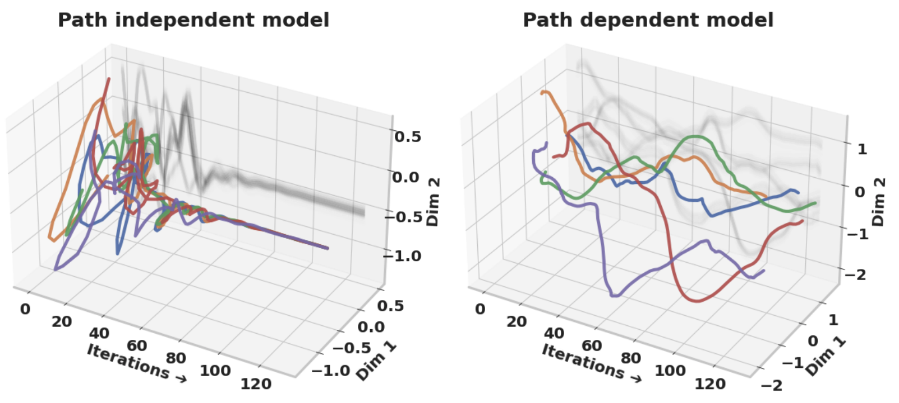

|
Kaiqu Liang I am a 3rd year PhD student in Computer Science at Princeton University, advised by Jaime Fernández Fisac. I also work closely with Tom Griffiths. Previously, I completed my MPhil in Machine Learning at the University of Cambridge, advised by Samuel Albanie and Bill Byrne. I did my undergraduate studies at the University of Toronto, where I was advised by Roger Grosse and Sven Dickinson. During my undergraduate years, I was also a student researcher in Vector Institute, advised by Roger Grosse. Email / Google Scholar / Twitter / Github / Linkedin |

|
News
07/2025: Released Machine Bullshit: Characterizing the Emergent Disregard for Truth in Large Language Models (Website, Tweet). Looking forward to future developments on understanding and mitigating Machine Bullshit!
06/2025: Research Intern at Meta Superintelligence Labs.
12/2024: Our workshop proposal - Public Trust in Autonomous Systems - is accepted by ICRA 2025! We look forward to hosting it in May 2025.
09/2024: Our paper Introspective Planning is accepted to NeurIPS 2024.
|
Research
I'm working on human-AI safety, LLM planning & alignment, and embodied AI. My long-term goal is to build safe, reliable AI systems that effectively assist humans. Previously, I also did research on video retrieval and out-of-distribution generalization. I’m always open to collaboration. If you find our interests align, please feel free to drop me an email. |
|
Kaiqu Liang, Haimin Hu, Xuandong Zhao, Dawn Song, Thomas L. Griffiths, Jaime Fernández Fisac Paper | Website | Code | Data | Tweet Media coverage: IEEE Spectrum | New Scientist | CNET | Psychology Today | MediaPost |
|
|
Kaiqu Liang, Haimin Hu, Ryan Liu, Thomas L. Griffiths, Jaime Fernández Fisac Preprint & NeurIPS Safe Generative AI Workshop Paper | Website | Code | Poster | Tweet We found that RLHF can induce significant misalignment when humans provide feedback while implicitly predicting future outcomes, creating incentives for LLM deception. To address this, we propose RLHS (Hindsight Simulation): By simulating future outcomes of the interaction before providing feedback, we drastically reduce misalignment. |
|
|
Kaiqu Liang, Zixu Zhang, Jaime Fernández Fisac Neural Information Processing Systems (NeurIPS), 2024 Paper | Website | Code | Poster | Tweet We proposed introspective planning as a systematic approach that utilizes reasoning and memory to refine the uncertainty of language agents. |
|
|
Haimin Hu, Gabriele Dragotto, Zixu Zhang, Kaiqu Liang, Bartolomeo Stellato, Jaime Fernández Fisac Robotics: Science and Systems (RSS), 2024 We introduced Branch and Play (B&P), an algorithm that effectively resolves multi-agent spatial navigation problems by determining the optimal order of play. |
|

|
Kaiqu Liang, Samuel Albanie International Conference on Computer Vision (ICCV), 2023 Paper | Code We proposed several simple yet effective baselines for interactive video retrieval via question-answering. |
|  |
Cem Anil*, Ashwini Pokle*, Kaiqu Liang*, Johannes Treutlein, Yuhuai Wu, Shaojie Bai, Zico Kolter, Roger Grosse Neural Information Processing Systems (NeurIPS), 2022 We demonstrated that equilibrium model improves generalization in harder instances due to their path independence, highlighting its importance for model performance and scalability. |
|
Kaiqu Liang*, Cem Anil*, Yuhuai Wu, Roger Grosse ICML Workshop on Uncertainty and Robustness in Deep Learning , 2021 We demonstrated and discussed why Deep Equilibrium (DEQ) Models outperform fixed-depth counterparts in generalizing under distribution shifts. |
Education |
||||||
|


Teaching |
|
Teaching Assistant • ECE346/COS348/MAE346: Intelligent Robotic Systems • Princeton University
Teaching Assistant • COS 350: Ethics of computing • Princeton University
Teaching Assistant • CSC165: Mathematical Expression and Reasoning for Computer Science • University of Toronto
|
Reviewer services |
International Conference on Learning Representations (ICLR)
Neural Information Processing Systems (NeurIPS)
International Conference on Machine Learning (ICML)
European Conference on Computer Vision (ECCV)
Computer Vision and Pattern Recognition Conference (CVPR)
|
|
Website source from Jon Barron |